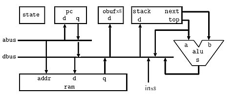

Stack machine -- multicycle.
Nakano, K., et.al.(refs below) describe two versions of a small stack machine suitable for implementation on an FPGA and they give the Verilog source code on their web site. The first verion of the cpu is a multicycle machine. The registers are arranged in a stack with the usual range of arithmetic operators and stack manipulation instructions. On the DE2, the cpu runs at 95 MHz clock (verilog for cpu, pll). The cpu verilog also includes a memory initialization block to implement a counter on the red LEDs. When switch SW[0] is on, the cpu halts. Adding load/store opcodes and program counter push/pop to the multicycle version is here. Load and store enable register indirect addressing, while PC manipulations enable subroutines.
The CPU design is from http://www.cs.hiroshima-u.ac.jp/~nakano/wiki/ and is GPL licensed.
Stack machine -- single cycle. The Nakano, K, et.al. single cycle design is here, running at 65 MHz. Adding the opcodes to push and pop the program counter is in this single cycle version. The single cycle version with a stack size of 16 occupies about 1300 logic elements (out of 33,000 on the DE2). Reducing the stack size to 8 drops the size to 940 logic elements. The test program is hard-coded into the ram block specification with a initialization block. Setting QuartusII to optimize for speed (See Tools...Advisors...Timing optimization advisor) increases size to 1000 logic elements and increases the operating frequency to 74 MHz.
Extended cpu and assembler
The cpu was extended to allow for up to eight in/out ports, with four appearing outside the cpu module. I/O addressing is shown in the opcode table below. The remaining four will be used for internal i/o, perhaps with a timer peripheral. This modification requires changes verilog top level module. This version also converts the halt opcode to a nop opcode and corrects a decoder error in the bnot/not instructions. The architecture below is slightly modifed from Nakano, K., et.al. by adding more i/o and a connection from the program counter to the data bus. The cpu requires about 1020 logic elements on the FPGA and runs at 74 MHz.

A simple assembler was written in matlab (also runs in Octave) to make programming easier.
A sample source code shows the syntax, and is assembled into a mif file, which can be read by the ram block. The link between the mif file and the ram block is implemented with a synthesis directive in the same statement as the memory declaration and before the semicolon which terminates the declaration.
reg [DWIDTH-1:0] mem [WORDS-1:0] /* synthesis ram_init_file = " test_stack_machine.mif" */ ; If you change the
mif file by reassembling assembler source, then you can change the memory contents without having to rebuild the whole project. Click Update Memory Initialization File on the Processing menu. After using this option, run the QuartusII Assembler (Processing menu...Start...Start Assembler) to generate new programming files for the device.
The assembler includes macro substitution (one level) and structured programming constructs.
The assembler is here. A sample source code shows the macro and structuring syntax (also see below), and is assembled into a mif file. The macro facility allows definition of pseudo-opcodes to streamline programming. The macros include a simple subroutine call/return mechanism to enable calling named functions with operands on the stack. The structuring extensions allow support of while-do-endwhile and if-then-else-endif constructions. Macro and structure syntax are further explained in the assembler program header. The assembler expands macros during its first pass over the source file, and produces an intermediate file temp.asm which can be inspected with a text editor. The assembler then takes a pass across the temp.asm file to generate two tables; a symbol table which contains the names and values of all constants, data names and code label names, and a table of opcodes and arguments. The assembler then traverses the code table, refering to the symbol table to expand the symbolic arguments into actual numbers, then converting the opcodes and numeric arguements (if any) into hex as a mif file.
There are four sections to an assembler program:
define. Example:`define ; named constants pattern3 15 ; 0x0f redLEDs 0 ; port 0 greenLEDs 1 ; port 1 forever 1 ; endless loop
data followed by an address in decimal. Example:`data 128 ;decimal start of data in memory temp 1 ; for stack DUP function pctemp 1 ; for subroutine link test 1 ; location to push test data
`macro followed by the macro name and the number of arguments. Each macro ends with the assembler directive `endmacro. Within the body of the macro, arguments are refered to using %n where n the argument number. Labels for jump targets may be used within a macro, must be local to the macro, and are modified to be unique for each instance of the macro. Example:`macro call 1 ; subroutine call (one parameter) pushpc jmp %1 `endmacro
`code directive. Code is written as one opcode (and possibly label and argument) per line. Macro names, structuring directives and native opcodes can all be used.Structuring directives must be on their own line. The code following the `if and `while must leave a logical value on the stack to indicate execution path to the `then or `do respectively. An `else is optional after the if-then. A short excerpt is below. Structuring directives may be arbitrarily nested, but error checking is not robust for poorly nested structuring. Full Example.
`while pushi 1 ; never exit, leaves a TRUE on the stack `do push counter1 ; get the counter call inc ; add one to the outer counter dup ; copy stack top out redLEDs ;output one copy, one on stack pop counter1 ; save the counter ;slow it down with an inner loop counter store_imm 1 counter2 ; reset and store inner counter `while push counter2 push 0 ; compare stack top to zero ne ; returns a TRUE if next != top `do push counter2 ; get the coutner call inc ; increment the inner counter pop counter2 ; save the counter `endwhile ;end of inner loop `endwhile ;end of outer loop
CPU opcodes and instruction format
The cpu instruction set is shown below. Notation:
I is a 12-bit signed integerA is an unsigned 12-bit integern is a 3 bit integer (used only in the extended i/o version of the cpu)top is top-of-stacknext is second-to-top-of-stackPC is the program countermem[A] is the contents of memory location A.| Instruction | Hex format | Operation |
|---|---|---|
nop |
0000 |
none |
pushi |
1000 + I |
[sign extended] I → top |
push A |
2000 + A |
mem[A] → top |
pop A |
3000 + A |
top →mem[A] |
jmp A |
4000 + A |
A → PC |
jz A |
5000 + A |
if (top==0) then A → PC |
jnz A |
6000 + A |
if (top!=0) then A → PC |
ld |
7000 |
mem[top] → top |
st |
8000 |
top → mem[next] |
pushpc |
9000 |
program counter → top |
poppc |
a000 |
top → program counter |
in |
d00n |
input[n] → top |
out |
e00n |
top → output[n] |
add |
f000 |
next + top → top |
sub |
f001 |
next - top → top |
mul |
f002 |
next * top → top |
shl |
f003 |
next << top → top |
shr |
f004 |
next >> top → top |
band |
f005 |
next & top → top |
bor |
f006 |
next | top → top |
bxor |
f007 |
next ^ top → top |
and |
f008 |
next && top → top |
or |
f009 |
next || top → top |
eq |
f00a |
next == top → top |
ne |
f00b |
next != top → top |
ge |
f00c |
next >= top → top |
le |
f00d |
next <= top → top |
gt |
f00e |
next > top → top |
lt |
f00f |
next < top → top |
neg |
f010 |
-top → top |
bnot |
f011 |
~top → top |
not |
f012 |
!top → top |
Adding more opcodes
A updated processor adds a few opcodes and changes the hex representation of pushpc and poppc. The assembler was modifed, as was the test code and mif. This version of the assembler also has better error reporting for mismatched opcodes and arguments. Argument types are table-driven for checking and the text of the line containing the error is reported.
Added/modified opcodes are mostly aimed at stack manipulation.
| Instruction | Hex format | Operation |
|---|---|---|
pushpc |
9000 |
program counter → top |
poppc |
9001 |
top → program counter |
dup |
f013 |
copies top of stack -- stack: top → top top |
drop |
f017 |
drops top of stack-- stack: next top → next |
over |
f01f |
copies next to stack top -- stack: next top → next top next |
dnext |
f01b |
drops next -- stack: next top → top |
Graphics examples
The processor was modified to support 18-bit operations (and instructions) and the multiply opcode was modified for 10.8 fixed point multiply. A test program (and modified assembler) validates the 18-bit registers and another program tests the multiply instruction.
Next, the processor was hooked up to the VGA display with one output port for address, one port for 1-bit data and one port for write-enable. An 18-bit. linear feedback, shift register random number generator produces random single bits to simulate diffusion. The shift register is too short for long term simulation. The diffusion only appears reasonable for a few seconds with 800 particles. The program source was structured so that reading/writing arrays is done using macros.
Another program computes the position of 800 particles in a simulated gravitational field with viscous damping (air friction). The random number generator produces 18-bit pseudorandom numbers which are used to dither the starting location of the particles into a square region.
The diffusion program was upgraded to a 36-bit random number generator which has a sufficiently long repeat time to enable a much longer diffusion simulation with 1800 particles. The computational frame rate is 75 fps with 1800 particles, running at the VGA clock frequency of 25.2 MHz. The timing analyser says that the cpu should run at 67 MHz, but it seems to run at 75.6 MHz, updating particle positions at 224 fps with 1800 particles, however, the video display wavers a little. At 50.4 MHz, 150 fps, the display is fine.
Coding the diffusion program suggested that it would be nice to streamline computational descriptions in the assembler, so a new structure directive was invented. The `calc directive allows serveral constant names, variable names, numerical constants, and opcodes to be placed on one line. Within the `calc, using the name of a varialble places it's value on the stack. Using a form such as var1[var2] treats var2 as an index into var1 and places the value of the indexed variable on the stack. Using =var or =var1[var2] stores the value on the stack to the appropriate location. Only opcodes with no operands (hex codes starts with Fxxx) can be used. The enhanced assembler is here and the particle example is here. Note that the parser is really stupid! No are spaces allowed between equal sign and variable name. No spaces allowed in indexed variable syntax. Examples:
`calc 478 8 shl =x[count] |
pushes 478 on the stack, then pushes 8, computes 478<<8 and pops the stack into the indexed variable x |
`calc frame_toggle bnot dup =frame_toggle |
pushes the value of frame_toggle onto the stack, bitwise inverts it, duplicates it, stores one copy and leaves the other on the stack. |
`calc scale shl x[count] add =x[count] |
takes the value already on the stack shifts it by the value stored in scale, gets the value of the indexed variable x, adds the scaled value to x, then stores the value back into x |
`calc x[count] 480 8 shl gt |
pushes the value of x indexed by count, pushes 480 and 8, computes 480<<8, and compares the values, leaving the logical 1/0 on the stack |
Simple Compiler
I wrote a small compiler which hides the assembly language somewhat. A program consists of a list of names, operators and structuring statments. Space and end-of-line are delimiters. Constants and variables must be declared. Inline and called functions must be specified before they are used. The program execution starts at the label main:.
var1[var2] treats var2 as an index into var1 and places the value of the indexed variable on the stack. Using =var or =var1[var2] stores the value on the stack to the appropriate location. For example the following code increments the variable count by pushing the memory value onto the stack, pushing 1 onto the stack, adding them, and popping the stack back into memory.count 1 add =count add, sub , shl, shr, band, bor, bxor, and, or, eq, ne, ge, le, gt , lt, neg , bnot , not, drop, over. in[const] and out[const].funct_entry:. You invoke the function by using the name funct_entry. The exit point of a called function is indicated by return. Foward references to called functions must be declared as shown in the longer example linked below.inline make_vga_addr
8 shr 9 shl =temp
8 shr temp add
endinliney[count] x[count] make_vga_addr out[vga_addr] if then else endif. For example the following compares an array variable to 480 and resets it to a lower value if it is too large.if x[count] 480 gt
then 478 =x[count]
endifwhile do endwhile. For example the following compares counter2 to zero and increments the counter until it overflows.while counter2 0 ne
do counter2 1 add =counter2
endwhile opcode.operand or opcode. if there is no operand. The period is required for assembler commands. The compiler merely inserts the assembler command into the code.inline swap
pop.4 ; locs 4&5 are hidden temp locations
pop.5
push.4
push.5
endinlineThe compiler generates code to initialize the return stack and then jump to main. Code starts executing at memory location zero, but your program starts at main:. The return stack is allocated in high memory, with variables just below. There is no collision detection between code and variables. Note that the parser is really stupid! No are spaces allowed between equal sign and variable name. No spaces allowed in indexed variable syntax. The complier and the diffusion code described in the last section serves as a longer example, running on the same processor (but with mif file /* synthesis ram_init_file = "stack_machine_vga_comp1.mif" */ specified in the memory module). Quartus archive.
Another, shorter example uses a slightly modified verilog interface to enable LEDs and replace the mif file with test1.mif. The test code is below. It shows the five basic sections of a program:
; This program demos compiler ; with LED output and button input ; ================================== constant ; named constants key3mask 8 key2mask 4 keys 1 ; port 1 keymask 15 ; 0x0f pattern2 255 ; 0xff pattern3 15 ; 0x0f redLEDs 3 ; port 3 greenLEDs 2 ; port 2 forever 1 ; endless loop ; ================================== variable test ; location to push test data counter1 ; outer loop counter counter2 ; inner loop counter ; ================================== inline inc 1 add endinline ; ================================ function evalkey ; ================================= program ; this section contains the actual program main: 0 out[greenLEDs]; reset the green LEDs 0 =counter1 ; init counter while forever ; never exit do counter1 inc ; get the counter and increment dup ; copy stack top out[redLEDs] ;output one copy, one on stack to store =counter1 ; save the counter ;slow it down with an inner loop counter 1 =counter2 ; reset and store inner counter while counter2 0 ne ; compare stack top to zero do counter2 inc =counter2 ; inc the counter endwhile ;end of inner loop ; detect some button presses if ; is KEY[3] pressed? key3mask evalkey ; detect 4th bit set then ; key 3 is pressed pushi.pattern2 out.greenLEDs else ; key 3 is not pressed pushpc. out[greenLEDs] endif endwhile ; end of outer loop ;=== read keys function ==== ; enter with a switch selector bit on the stack ; exits with a TRUE/FALSE for match/nomatch on stack evalkey: in[keys] bnot ; invert so key-down==1 keymask band ; use only lower 4 bits eq ; compare to specific_keymask return ;===end of code ============================
Serial input/output
I used serial hardware from John Loomis (see ref below) to add i/o to the stack cpu. The serial i/o will work up to 115200 baud, but is set in the example to 9600 baud. Connection was made to the PC from the RS-232 connector on the DE2. The PC is using the terminal emulator PuTTY, but you could use serial input to Matlab also. The top level module has the serial routines included, but be sure that the mif file name in the memory module matches that generated by the compiler.
One new structure was added to the compiler: "string places the string on the stack to be printed by putstr. The limit is about 12 characters before you overflow the stack! Always follow a quoted string with putstr! The compiler is here. The source code implements the low level interface routines getchar and putchar, then uses them to build putstr, gethex and puthex. Gethex and puthex read and write a single 18-bit number to/from the stack. The main routine prompts the user to enter a number, then prints it, along with a sequence number.
References:
Nakano, K.; Ito, Y., Processor, Assembler, and Compiler Design Education Using an FPGA, Parallel and Distributed Systems, 2008. ICPADS '08. 14th IEEE International Conference on; 8-10 Dec. 2008 pages: 723 - 728 (Nakano, K.; Ito, Y.; Dept. of Inf. Eng., Hiroshima Univ., Higashi-Hiroshima, Japan)
Nakano, K.; Kawakami, K.; Shigemoto, K.; Kamada, Y.; Ito, Y. A Tiny Processing System for Education and Small Embedded Systems on the FPGAs, Embedded and Ubiquitous Computing, 2008. EUC '08. IEEE/IFIP International Conference, Dec. 2008 pages: 472 - 479
John S. Loomis, Digital Labs using the Altera DE2 Board, http://www.johnloomis.org/digitallab/, Electrical and Computer Engineering, University of Dayton, Dayton, OH 45469-0232